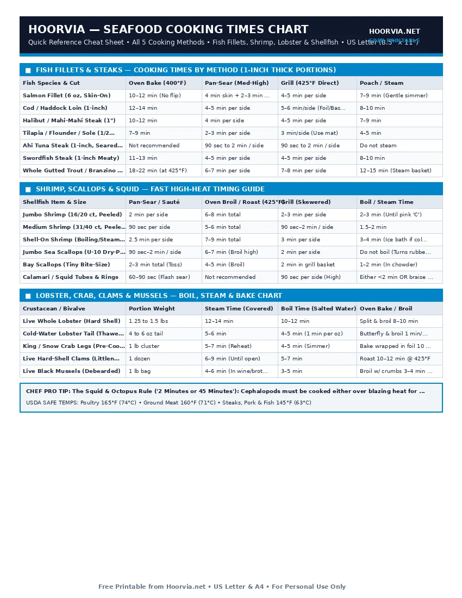

Seafood Cooking Times Chart (Bake, Pan-Sear, Grill, Boil & Steam)
Seafood contains virtually zero tough elastin and very little collagen, meaning fish fillets and shellfish cook in a fraction of the time required for beef or poultry. Whether you are oven-roasting salmon at 400°F, searing sea scallops in cast iron, or steaming live mussels, use this multi-method matrix to time every seafood cut to the exact minute.
| Fish Species & Cut | Oven Bake (400°F) | Pan-Sear (Med-High) | Grill (425°F Direct) | Poach / Steam |
|---|---|---|---|---|
| Salmon Fillet (6 oz, Skin-On) | 10–12 min (No flip) | 4 min skin + 2–3 min flip | 4–5 min per side | 7–9 min (Gentle simmer) |
| Cod / Haddock Loin (1-inch) | 12–14 min | 4–5 min per side | 5–6 min/side (Foil/Basket) | 8–10 min |
| Halibut / Mahi-Mahi Steak (1") | 10–12 min | 4 min per side | 4–5 min per side | 7–9 min |
| Tilapia / Flounder / Sole (1/2" Thin) | 7–9 min | 2–3 min per side | 3 min/side (Use mat) | 4–5 min |
| Ahi Tuna Steak (1-inch, Seared Rare) | Not recommended | 90 sec to 2 min / side | 90 sec to 2 min / side | Do not steam |
| Swordfish Steak (1-inch Meaty) | 11–13 min | 4–5 min per side | 4–5 min per side | 8–10 min |
| Whole Gutted Trout / Branzino (1 lb) | 18–22 min (at 425°F) | 6–7 min per side | 7–8 min per side | 12–15 min (Steam basket) |
| Shellfish Item & Size | Pan-Sear / Sauté | Oven Broil / Roast (425°F) | Grill (Skewered) | Boil / Steam Time |
|---|---|---|---|---|
| Jumbo Shrimp (16/20 ct, Peeled) | 2 min per side | 6–8 min total | 2–3 min per side | 2–3 min (Until pink 'C') |
| Medium Shrimp (31/40 ct, Peeled) | 90 sec per side | 5–6 min total | 90 sec–2 min / side | 1.5–2 min |
| Shell-On Shrimp (Boiling/Steaming) | 2.5 min per side | 7–9 min total | 3 min per side | 3–4 min (Ice bath if cold) |
| Jumbo Sea Scallops (U-10 Dry-Pack) | 90 sec–2 min / side | 6–7 min (Broil high) | 2 min per side | Do not boil (Turns rubbery) |
| Bay Scallops (Tiny Bite-Size) | 2–3 min total (Toss) | 4–5 min (Broil) | 2 min in grill basket | 1–2 min (In chowder) |
| Calamari / Squid Tubes & Rings | 60–90 sec (Flash sear) | Not recommended | 90 sec per side (High) | Either <2 min OR braise 45m |
| Crustacean / Bivalve | Portion Weight | Steam Time (Covered) | Boil Time (Salted Water) | Oven Bake / Broil |
|---|---|---|---|---|
| Live Whole Lobster (Hard Shell) | 1.25 to 1.5 lbs | 12–14 min | 10–12 min | Split & broil 8–10 min |
| Cold-Water Lobster Tail (Thawed) | 4 to 6 oz tail | 5–6 min | 4–5 min (1 min per oz) | Butterfly & broil 1 min/oz |
| King / Snow Crab Legs (Pre-Cooked) | 1 lb cluster | 5–7 min (Reheat) | 4–5 min (Simmer) | Bake wrapped in foil 10 min @ 375°F |
| Live Hard-Shell Clams (Littleneck) | 1 dozen | 6–9 min (Until open) | 5–7 min | Roast 10–12 min @ 425°F |
| Live Black Mussels (Debearded) | 1 lb bag | 4–6 min (In wine/broth) | 3–5 min | Broil w/ crumbs 3–4 min (Half-shell) |
Printable Cheat Sheet Preview (US Letter & A4)
High-contrast, ink-saving layout designed for kitchen binders, grill stations, and refrigerator doors. No sign-up required.

Matching the Right Cooking Method to Fatty vs. Lean Seafood
Not all fish react the same way to dry heat versus moist heat. Dividing seafood into three structural categories guarantees restaurant results every time:
1. Oily & Rich Fish (Salmon, Trout, Mackerel, Sablefish)
High levels of omega-3 fats baste the muscle fibers from the inside out, making oily fish forgiving under high dry heat. They excel at 400°F–425°F oven roasting, cast-iron pan-searing, and direct grilling. Start skin-side down in a hot skillet for 70% of the total cook time so the skin renders crisp like bacon while protecting the delicate flesh.
2. Lean Flaky White Fish (Cod, Halibut, Tilapia, Sole, Snapper)
Because lean fish contain less than 2% fat, direct dry heat dries them out quickly unless protected by a fat barrier or steam envelope. Use pan-basting with foaming butter (arrosé), baking en papillote (parchment packets), or gentle poaching at 170°F–180°F.
3. The 1-Minute-Per-Ounce Lobster Tail Rule
For cold-water lobster tails, weigh the tail in ounces before cooking: whether boiling, steaming, or broiling butterflied tails at 500°F, cook for exactly 1 minute per ounce (e.g., a 5-ounce tail takes 5 minutes).
Frequently Asked Questions
How do I stop fish skin from curling up in a hot skillet?
When raw fish skin hits a hot pan, collagen shrinks rapidly and buckles the center of the fillet upward. Score the skin lightly 3 times with a sharp knife before cooking, and press the fillet flat with a flexible fish spatula for the first 20 seconds in the pan.
Should I thaw frozen shrimp before cooking?
Yes! Unlike breaded frozen snacks, raw unbreaded shrimp release a puddle of water if thrown frozen into a skillet. Submerge frozen shrimp in a bowl of cold tap water for 10 minutes, drain, and pat completely dry with paper towels before searing.
How much salt should I put in water for boiling lobster or shrimp?
Season boiling seafood water 'like the ocean'—use 1/4 cup (4 tablespoons) of kosher salt per gallon (4 quarts) of water so the shellfish meat seasons evenly without waterlogging.
Complete Meat & Seafood Reference Cluster (10 Free Sheets)
- 🥩 Master Meat Internal Temperature Chart (#021)
- 🥩 Steak Doneness Chart: Pull vs Target Temps (#022)
- 🥩 Chicken Temperature Chart: White vs Dark Meat (#023)
- 🥩 Turkey Temperature & Roasting Time Guide (#024)
- 🥩 Pork Internal Temperature Chart: Chops vs BBQ (#025)
- 🥩 Ground Meat Internal Temperature Chart (#026)
- 🥩 Fish & Shellfish Internal Temperature Chart (#027)
- 🥩 Roast Cooking Time & Temperature Chart (#029)
- 🥩 Meat Resting Time & Carryover Temp Guide (#030)